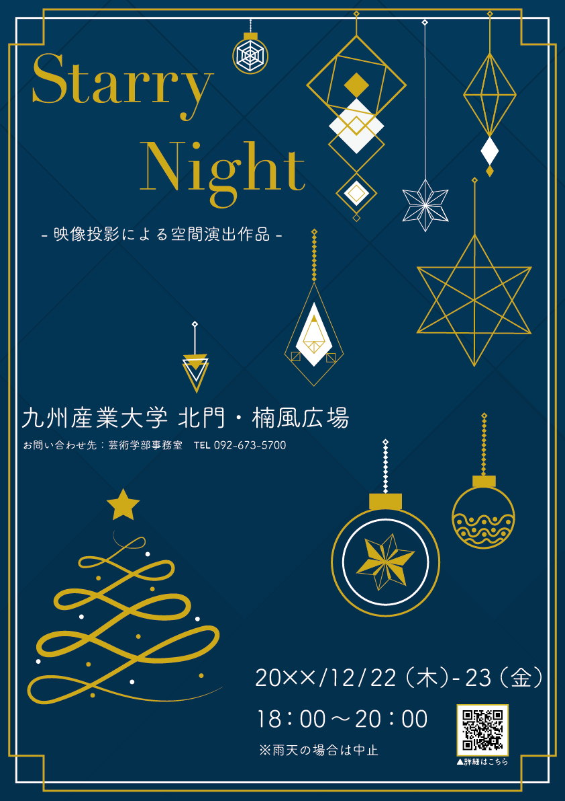
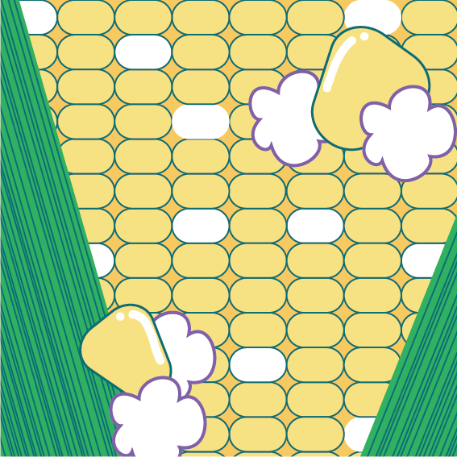

トランプ

トランプのシンボルデザインを制作。
-
カジノをテーマとしてチップに描いてある絵柄をイメージした。
スペード・クラブには夜、ハート・ダイヤには昼の意味があるため、周りにそれぞれ星と太陽の光を
イメージした後光を配置した。
StarryNight
クリスマスイベントのPRを想定して制作。
-
ポスターのアイデアを３案考えた。最終的に案１のデザインに決定した。
このポスターはクリスマスツリーに飾っているオーナメントを主なイメージとして制作した。
オーナメントのデザインは星のきらめきをイメージしている。色数を絞ることでシンプルかつ
上品さを表現した。
ラムネ
夏をテーマに制作。
-
私にとって夏といえばラムネだったのでラムネを主役に置き、ビビットカラー、ハッキリ、パキッとを意識し制作していった。
ラムネに周りにある黄色を入れることで、同じ場所に存在することを表現した。
また、背景にグラデーションの円を置き、爽やかさ＋ラムネのシュワシュワ感を演出した。
とうもろこし
自然のものをテーマに制作。
-
とうもろこし、ポップコーンをイメージし、５色+白で表現した。ただ粒を並べるだけでなく、食べられているところを作ったり、
とうもろこしから連想されるポップコーンをイメージし弾けさせた。
今までは、たくさんの色を使って作品を制作していたため色数を制限しての制作は難しかったが、楽しく制作することができた。